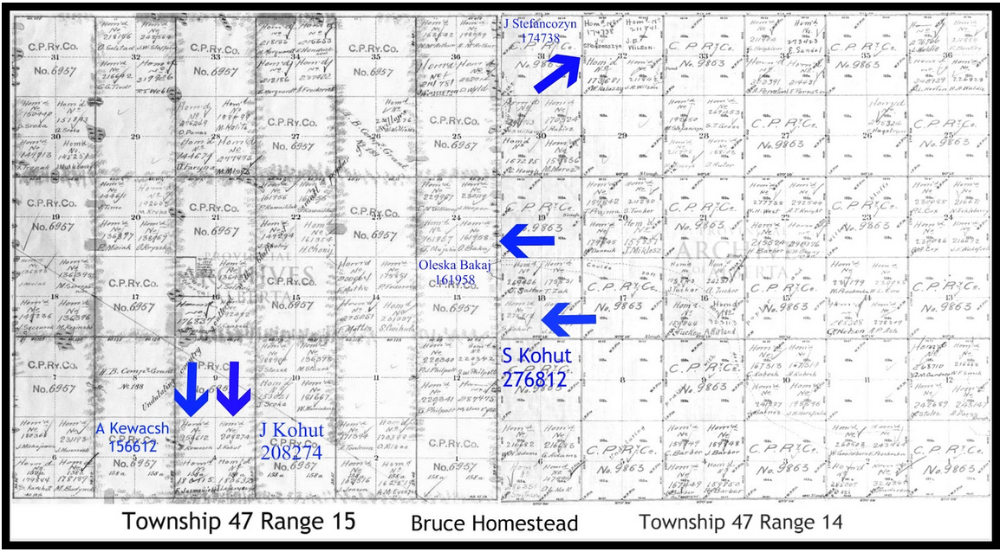

Alec Bakay and Melenka (Merezowski) Bakay lived at #19 Krakowec in the Kingdom of Halych, Austrian Empire prior to emigrating to Canada. They attended the Greek Catholic Church of St. Nicholas in Krakowec. Alec and his wife Melenka were farming in the area.
Krakowec is now named Krakovetz in the district of Yavorivskij in the region of Lvivska in the Ukraine. Krakowec currently is an international border crossingbetween the Ukraine and Poland. The border crossing averages about 5000 cars per day. The village is currently populated with about 1100 people. It is the birthplace of the Ukrainian Insurgent Army general Roman Shukhevych.
The family decided to immigrate to Canada so their daughters could have a better standard of living than that which could be achieved in their village. Beforethe Bakays left for their voyage they would have sold most of their possessions to neighbors, family and friends.
They made their way to Hamburg, Germany. On April 27, 1904, the Bakays left from Hamburg aboard the ship, Phoenicia, which was 460 ft. x 52 ft. passenger ship with one funnel, four masts, and a single screw propeller. The Phoenicia had a top speed of 14 knots and was built in 1894. It could accommodate 60-1st and 2,000-3rd class passengers. On the trip to Canada, the Phoenicia made one stop at Antwerp, and arrived on May 16, 1904 in Montreal, Quebec. The voyage to Canada across the Atlantic Ocean was difficult and tedious due to the fact that everyone was in cramped quarters. After departing the ship, they travelled by train to Strathcona, Alberta where they were met by Alec’s relatives (may have been a kohut or Kewacsh) who had immigrated earlier to the Bruce area. The Bakays were then taken by oxen and buckboard to the Bruce area to start a new life. That year, 1904, they would have stayed with their relatives until their homestead was granted in early 1905.
Alec applied for a homestead in 1904 and was granted 160 acres (¼ section) of land located at SE Township 24 Range 15 West of the 4 th Meridian in 1905 which is 8 miles south of the Village of Bruce. This homestead was ½ miles from S. Kohut and about 6 miles from a J. Kohut who was neighbors to A. Kewacsh. Bakays where related to Kohuts as it was understood that Mrs. Kohuts were Julia’s cousin who was a probably a Kewacsh. The other interesting find from the Homesteading map is the name Kewacsh which could be anglicized to Karwash.
On March 1, 1905 with their daughters Anastasia (11), Tatianna (8), Catherine (5) and Julia (2), the Bakay’s moved to their new homestead. Alec was granted the patent for the land in 1909 after showing improvement to the land. The documents for the patent stated that by 1909 there was 16 acres of land cultivated and they had 12 head of cattle. Some of the other improvements included a 14’ X 44’ log house (worth $250), one well (worth $10), 1.5 miles of fence (worth $60), and a stables (worth $100). Due to handwriting misinterpretations the documents for the original homestead are under OLCSKA Bakaj.
In April of 1905, Nelly joined the family just as they were settling on the farm. In 1906 the federal government did a census of the Prairie Provinces due to the large population growth. One of the interesting items from the census was the renaming of the girls to English first names. Melenka became Mary, Anastasia became Annie, Tatianna became Louise, and Nellie became Emelia. (Anastasia)Nettie moved out in 1907 to find a job and help the family with the far. In the 1911 census which was taken sometime before the Bakays moved to Flat Lake area. In the 1911 census there was addition to the family, a son named Mike who was born according to the census in Aug. of 1905. Again because of not being able to read and write English the Bakays first names were changed again to Alex, Melenka became Millie, Titianna became Stacey, Catherine became Kate, Julia became Lilly, Nelly became Jenna lye and a son Mike. There is no mention of Mike in any other documents so I am assuming he died either in 1910 or 1911 around when the Bakays moved to Flat Lake.
The summers, while they were by Bruce, were hot and dry which made farming trying especially taking care of the livestock difficult due to the lack of water. In 1910 the government had finished surveying the area around St. Paul des Métis. Hearing, probably from his catholic priest, that there were plenty of lakes and land for sale further north in the St. Paul area, Alec had decided to try and farmstead in the St. Paul area with hopefully better results.
In order to homestead in Canada again Alex had Jesse Allen of Midland, Ontario, a Boer war veteran, make Alec a surrogate in April 1911, for his rights to homestead a quarter of land in western Canada. Alec, Melenka, and the four youngest daughters Tatianna (14), Catherine (12), Julia(8), and Nelly (6) loaded up a wagon with their belongings and started a four day trek from south of Bruce to the second homestead near Flat Lake. The trip would be made in a covered wagon and down existing trails to St. Paul. From St. Paul they would then take the trail to Cold Lake across country. Once by what would become Flat Lake Hall they would then go south along the north east side of Hornpile Lake. The trail went right by where they would homestead. When they arrived at the new homestead, a large body of water right next to the farm was a welcoming sight. The family would no longer have to worry about water wells in the summer for the cattle because of the slough and hay meadow right next to the farm yard. This proved to be an ideal site for the farm yard having a large body of water to the east with a small meadow close to the yard. Although no land was broken when they arrived, Alec with help from his daughters slowly opened up the land. According to the homestead patent, they opened up 2 acres in 1911, 3 in 1912, 5 in 1913, and 7 in 1915, and 1 acre in 1916 for a total of 21 acres. In addition, the patent listed the amount of livestock on the farm, which included 20 head of cattle in 1911, 12 in 1912, 16 in 1913, 18 in 1914, 24 in 1915 and finally 24 in 1916. This shows how the farm was slowly growing from wilderness to a working farm. The other livestock that they had listed were horses which they maintained at 3 head until 1915 when it grew to 6 head and then 8 head in 1916. With the price of a horse being approximately $250.00 per horse you can use this as a gauge to measure the farm’s prosperity. When Alec applied for the second land patent for the Flat Lake farm, he was 57 years old. The land patent also listed the building on the farm in 1916 which included a 24’ X 14’ log house (worth $150.00), a 24’ X 30’ stable (worth $150.00), 14’ X 18’ granary (worth $100.00), and one 14’ X 20’ hen house worth $80.00).
Initially to get supplies, Alec had to travel to Vegreville, Alberta with a team of horses and a wagon. The trip would take up to four days on bad trails, having to rest the horses half way there and half way back. The girls took turns walking to the nearest post office, at Flat Lake store near the present Flat Lake Hall, which was 7 miles away across country, usually once a week. The girls were also taught to trap and skin rabbits, muskrats and weasels and then sold the fur for 25 cents each.
Anastasia who had moved out prior to the move to St.Paul was now married to Andrew Steco (Stecco/Stech), and had moved to Seattle, Washington in 1914 where Andrew started looking for work. Anastasia and Andrew would eventually end up in Flint, Michigan. Tatianna was next to move out in 1912 when she married Pete Haraba, a neighbor who was homesteading a mile to the south. Tatianna and Pete would then move further west to a quarter with fruit trees and raise their family there directly north of St Paul. Catherine was the third to move out in 1917 when she married John Michalow, a farmer from the Therian area. Catherine and John would move to Edmonton later in their life with their family. After Catherine left, with only two daughters at home to help out, Alec and Melenka decided to hire men to help with the farm work. One of the hired hands was Sam Starosielski who started a courtship with Julia while working on the farm. On June 7, 1920 Sam and Julia were married in the St. Paul Catholic Church. The summer of 1920 was wet and cold summer. Nelly caught pneumonia that summer and passed away at the age of 16 years old.
Sam and Julia continued to stay at the farm to help out but after 3 years, they moved to Leduc. Alec hired farm hands to continue working on the farm as both he and Melenka were starting to slow down in their elderly years. Alec’s health started failing in the late 1920’s and hearing that his nephew who was working in France was available and Alec needed help, Alec sent some money to help Stephan Karwash immigrate to Canada in 1927. Stephan stayed on the farm and helped Alec. Shortly after he got to Canada he was able to send for his wife. They helped on the farm for two years and in the spring of 1930, the Karwash’s moved out and bought a quarter east of the Bakaj’s (NE 2 59 8 W4). In 1930, Sam and Julia with the first five boys returned to the farm to help Alec and Melenka. The addition of the boys helped with all the work involved with the farm. Alec passed away in the spring of 1934 at the age of 75 and Melenka passed away in 1940 at the age of 76.
Alex{Oleksa} Bakay 1859 – 1934 Married Melania (Merezowski) Bakay 1864 – 1940 Daughters Husbands Anastasia Nettie (Bakay) Andrew Steco(Stech/Stecco) April 20, 1894 – May 25, 1985 Nov. 27, 1885 – March 16, 1953 Married on or before 1914 Tatianna (Bakay) Pete Haraba July 18, 1897 – March 28, 1975 July 12, 1882 – July 24, 1960 Married in May 27, 1912 Catherine Kashka (Bakay) John Michalow 1899 – 1999 1886 – 1955 Married in 1917 Julia Lily (Bakay) Sam (Starosielski) Stark February 3, 1903 – April 19, 1990 August 26, 1893 – April 5, 1970 Married in June 7, 1920 Emilia Nelly Bakay April 10, 1905 – 1920
1906 census
1916 census
1911 census
Arrival passenger list
Picture ofJulia’s (Lily) Spinning wheel